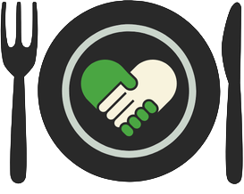

Meal Match connects food businesses with food pantries, food banks, shelters, and community organizations so surplus food reaches people instead of landfills.
Users Served
Meals Delivered
Partner Organizations
Slot Fulfillment Rate
Meal Match helps local food organizations share extra food through a clear pickup system that makes donating easier, faster, and more reliable.
Good food often goes unused because scheduling is fragmented. Meal Match gives both sides one place to coordinate pickups, reduce waste, and improve food access.
Food organizations post donation slots with date, time, location, pounds, and food type.
Recipient organizations browse available slots and sign up for nearby pickups.
Both portals track pounds donated, meals delivered, growth over time, and pickup performance.
The platform supports trusted food donors and recipient organizations with a clear donation workflow.
Food organizations can post and manage slots. Recipient groups can find, reserve, and organize pickups from one dashboard.
Sign up as either a food organization or a food recipient.
Access your role-specific portal for donations, schedules, stats, and profile settings.
Post open donation slots or sign up for available pickups and begin tracking impact.
For this demo, yes because it is designed as a free coordination platform.
Prepared meals, produce, bakery items, pantry staples, beverages, and packaged foods.
Food organizations post a slot and a recipient organization signs up to claim it.
Slots can be canceled and reopened so another recipient can claim them.